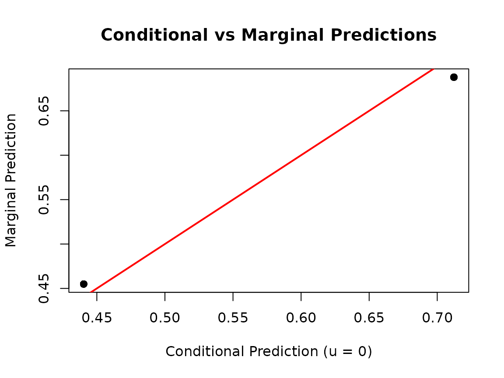
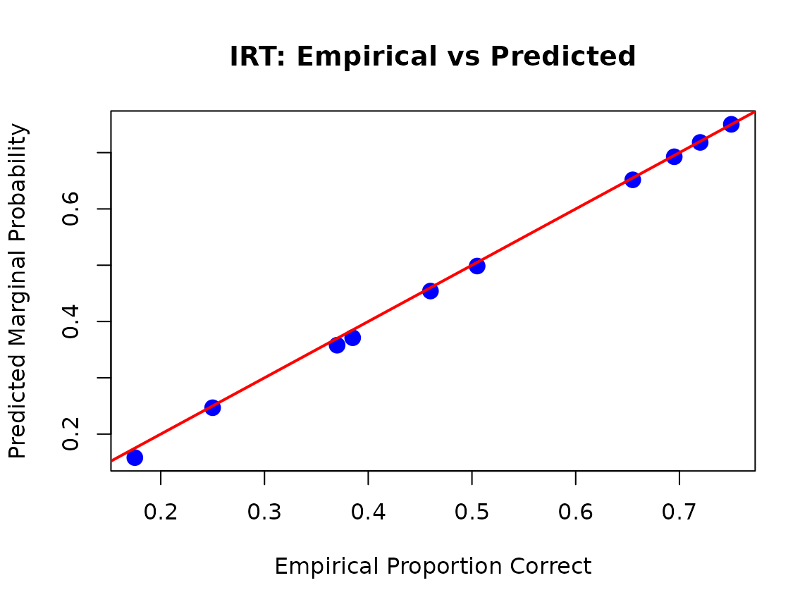
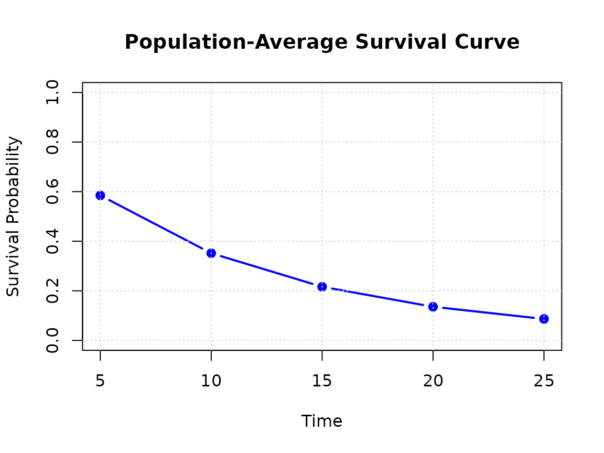

Marginal vs Conditional Predictions in gllammr
gllammr Package
2026-07-11
Source:vignettes/marginal-predictions.Rmd
marginal-predictions.RmdIntroduction
This vignette explains the difference between conditional and marginal predictions in generalized linear mixed models (GLMMs) and other hierarchical models, and demonstrates how to compute both types of predictions using gllammr.
What are Marginal Predictions?
In mixed models, we distinguish between two types of predictions:
Conditional Predictions
Conditional predictions are specific to a particular level of the random effects. When we set the random effects to zero (u = 0), we get predictions at the “average” cluster level:
E[Y | X, u = 0] = g^(-1)(X'β)where g^(-1) is the inverse link function.
Computing Marginal Predictions
gllammr uses Monte Carlo integration to compute marginal predictions:
- Draw S samples from the random effects distribution: u_s ~ N(0, Σ_u)
- For each sample, compute: ŷ_s = g^(-1)(X’β + Z’u_s)
- Average: E[Y|X] ≈ (1/S) Σ_s ŷ_s
The default is S = 1000 samples (n_sim = 1000).
Example 1: Binomial GLMM
Let’s start with a simple example where the difference between conditional and marginal predictions is clear.
library(gllammr)
#>
#> Attaching package: 'gllammr'
#> The following object is masked from 'package:stats':
#>
#> binomial
set.seed(123)
# Simulate data: treatment effect with clinic random effects
n_clinics <- 20
n_per_clinic <- 25
n <- n_clinics * n_per_clinic
u_clinic <- rnorm(n_clinics, 0, 1)
data <- data.frame(
treatment = rep(0:1, each = n / 2),
clinic = factor(rep(1:n_clinics, each = n_per_clinic))
)
data$success <- rbinom(
n, 1,
plogis(-0.2 + 0.8 * data$treatment + u_clinic[as.integer(data$clinic)])
)
# Fit binomial GLMM (stats::binomial uses the general TMB estimator)
fit <- gllamm(success ~ treatment + (1 | clinic),
data = data,
family = stats::binomial())
# Conditional predictions (at u = 0)
pred_cond <- predict(fit, type = "response", re.form = NA)
# Marginal predictions (averaged over clinics)
pred_marg <- predict(fit, type = "marginal", n_sim = 1000)
# Compare
summary(pred_cond - pred_marg)
#> Min. 1st Qu. Median Mean 3rd Qu. Max.
#> -0.014592 -0.014592 0.004872 0.004872 0.024336 0.024336Key insight: for the logit link, marginal probabilities are pulled toward 0.5 relative to conditional probabilities when the random-effect variance is substantial, because the inverse logit flattens in the tails.
plot(pred_cond, pred_marg,
xlab = "Conditional Prediction (u = 0)",
ylab = "Marginal Prediction",
main = "Conditional vs Marginal Predictions",
pch = 19, col = rgb(0, 0, 0, 0.3))
abline(0, 1, col = "red", lwd = 2)
Example 2: Ordinal Models
For ordinal outcomes, marginal predictions give us population-level category probabilities.
set.seed(456)
data_ord <- data.frame(
rating = sample(1:5, n, replace = TRUE),
temp = rnorm(n),
judge = factor(rep(1:n_clinics, each = n_per_clinic))
)
# Fit proportional odds model
fit_ord <- gllamm(rating ~ temp + (1 | judge),
data = data_ord,
family = ordinal(link = "logit"))
# Marginal category probabilities (n_obs x n_categories matrix)
pred_marg_ord <- predict(fit_ord, type = "marginal", n_sim = 500)
# Average marginal probabilities: expected population proportions
# of each rating category, accounting for between-judge variability
round(colMeans(pred_marg_ord), 3)
#> P(Y=1) P(Y=2) P(Y=3) P(Y=4) P(Y=5)
#> 0.229 0.211 0.166 0.191 0.202Example 3: IRT Models
In IRT, marginal predictions give the proportion of the examinee population expected to answer each item correctly.
set.seed(789)
n_persons <- 200
n_items <- 10
theta <- rnorm(n_persons)
b_item <- seq(-1.5, 1.5, length.out = n_items)
responses <- sapply(b_item, function(b) rbinom(n_persons, 1, plogis(theta - b)))
# Fit 2PL model
fit_2pl <- fit_irt(responses, model = "2PL")
# Marginal item response probabilities (one per item)
pred_marg_irt <- predict(fit_2pl, type = "marginal", n_sim = 1000)
# Compare to empirical proportions correct
emp_props <- colMeans(responses)
plot(emp_props, pred_marg_irt,
xlab = "Empirical Proportion Correct",
ylab = "Predicted Marginal Probability",
main = "IRT: Empirical vs Predicted",
pch = 19, cex = 1.5, col = "blue")
abline(0, 1, col = "red", lwd = 2)
Marginal IRT predictions are useful for item difficulty interpretation, predicted test score distributions, and population-level assessment.
Example 4: Explanatory IRT (EIRT)
EIRT allows predictions for new items based on item characteristics.
# Item data with predictors
item_data <- data.frame(
item_id = 1:n_items,
item_length = rnorm(n_items),
content_area = factor(sample(c("Algebra", "Geometry"), n_items, replace = TRUE))
)
# Fit EIRT model
fit_eirt_model <- fit_eirt(responses,
item_data = item_data,
difficulty_formula = ~ item_length + content_area,
model = "2PL")
# Predict for new (not yet administered) items
new_items <- data.frame(
item_length = c(-1, 0, 1),
content_area = factor(c("Algebra", "Algebra", "Geometry"))
)
pred_new <- predict(fit_eirt_model,
newdata = new_items,
type = "marginal",
n_sim = 500)
data.frame(
item_length = new_items$item_length,
content_area = new_items$content_area,
pred_prob = round(as.numeric(pred_new), 3)
)
#> item_length content_area pred_prob
#> 1 -1 Algebra 0.274
#> 2 0 Algebra 0.389
#> 3 1 Geometry 0.704Use case: automatic item generation, item bank calibration, and predicting item performance before pilot testing.
Example 5: Multinomial Models
For multinomial outcomes, marginal predictions give population-level category probabilities (e.g., market shares).
set.seed(321)
data_mult <- data.frame(
choice = sample(0:2, n, replace = TRUE),
price = rnorm(n),
quality = rnorm(n),
person = factor(rep(1:100, length.out = n))
)
# Fit multinomial logit model with a person-level random effect
fit_mult <- fit_multinomial(choice ~ price + quality + (1 | person),
data = data_mult)
# Marginal category probabilities
pred_marg_mult <- predict(fit_mult, type = "marginal", n_sim = 500)
# Population-level choice shares
round(colMeans(pred_marg_mult), 3)
#> P(Y=0) P(Y=1) P(Y=2)
#> 0.316 0.308 0.376Example 6: Survival Models
Marginal survival curves show population-average survival, integrating over the frailty distribution.
set.seed(654)
n_hospitals <- 20
u_hosp <- rnorm(n_hospitals, 0, 0.5)
data_surv <- data.frame(
treatment = rep(0:1, each = n / 2),
hospital = factor(rep(1:n_hospitals, each = n / n_hospitals))
)
t_true <- rexp(n, rate = exp(-2.5 + 0.5 * data_surv$treatment +
u_hosp[as.integer(data_surv$hospital)]))
cens <- rexp(n, rate = 0.05)
data_surv$time <- pmin(t_true, cens)
data_surv$status <- as.integer(t_true <= cens)
# Fit Weibull survival model with hospital frailty
fit_surv <- fit_survival(Surv(time, status) ~ treatment + (1 | hospital),
data = data_surv,
distribution = "weibull")
# Marginal survival probabilities at selected times
times <- c(5, 10, 15, 20, 25)
surv_marg <- predict(fit_surv,
type = "marginal_survival",
times = times,
n_sim = 500)
# Population-average survival curve
avg_surv <- colMeans(surv_marg)
plot(times, avg_surv, type = "b",
xlab = "Time", ylab = "Survival Probability",
main = "Population-Average Survival Curve",
ylim = c(0, 1), pch = 19, col = "blue", lwd = 2)
grid()
When to Use Marginal vs Conditional Predictions
Use Conditional Predictions When:
- Cluster-specific inference: you want the expected outcome for a specific cluster (a particular school, hospital, or person)
- Comparing clusters: you’re interested in between-cluster differences
- Prediction for a new observation in an existing cluster
Use Marginal Predictions When:
- Population-level inference: expected outcome averaged across all clusters
- Policy evaluation: population-level treatment effects
- Standardization: comparing populations with different cluster compositions
- New cluster prediction: observations from a new, unseen cluster
- Reporting to non-technical audiences: marginal predictions often have a simpler interpretation
Technical Details
Computational Considerations
- The default
n_sim = 1000balances accuracy and speed - Increase (e.g.,
n_sim = 5000) for final/publication estimates - Decrease (e.g.,
n_sim = 100) during exploration
Standard Errors
For GLMMs you can request Monte Carlo standard errors:
pred_with_se <- predict(fit, type = "marginal", n_sim = 500, se.fit = TRUE)
str(pred_with_se)
#> List of 2
#> $ fit : Named num [1:500] 0.464 0.464 0.464 0.464 0.464 ...
#> ..- attr(*, "names")= chr [1:500] "1" "2" "3" "4" ...
#> $ se.fit: Named num [1:500] 0.00865 0.00865 0.00865 0.00865 0.00865 ...
#> ..- attr(*, "names")= chr [1:500] "1" "2" "3" "4" ...Special Case: Gaussian Models
For Gaussian models with identity link, marginal and fixed-effects-only predictions coincide (no Monte Carlo error):
set.seed(987)
data_g <- data.frame(
y = rnorm(200), x = rnorm(200),
group = factor(rep(1:20, each = 10))
)
fit_gauss <- gllamm(y ~ x + (1 | group), data = data_g, family = gaussian())
pred_fixed <- predict(fit_gauss, re.form = NA)
pred_marg_g <- predict(fit_gauss, type = "marginal")
max(abs(pred_fixed - pred_marg_g))
#> [1] 0Supported Models
Marginal predictions are available for:
- GLMM: Gaussian, binomial, Poisson
-
Ordinal: cumulative link models
(
type = "marginal") - IRT: Rasch, 2PL, 3PL, GRM, PCM, GPCM, NRM
- EIRT: including predictions for new items
- Multinomial: baseline-category logit
-
Survival: exponential, Weibull
(
type = "marginal_survival")
References
- Skrondal, A., & Rabe-Hesketh, S. (2009). Prediction in multilevel generalized linear models. Journal of the Royal Statistical Society: Series A, 172(3), 659-687.
- Hedeker, D., & Gibbons, R. D. (2006). Longitudinal Data Analysis. Wiley.
- Zeger, S. L., Liang, K. Y., & Albert, P. S. (1988). Models for longitudinal data: a generalized estimating equation approach. Biometrics, 1049-1060.
Summary
- Marginal predictions provide population-level inference by averaging over random effects
- For nonlinear links, marginal ≠ conditional (Jensen’s inequality)
- Use
type = "marginal"withpredict()for any gllammr model - Adjust
n_simto balance accuracy and computation time
For more information, see ?predict.gllamm and the
related predict methods.